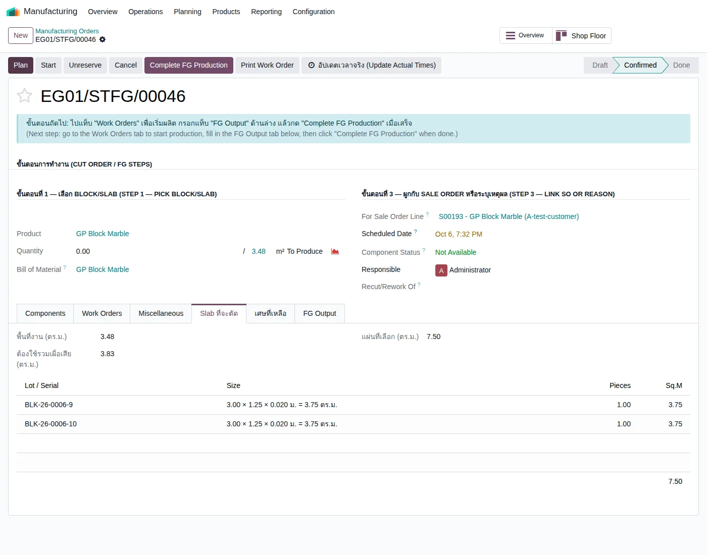
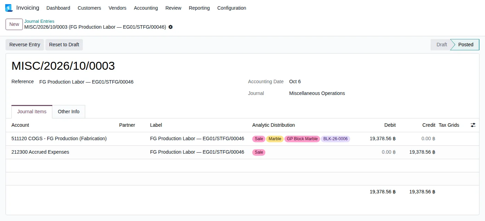

อัปเดตล่าสุด: 14 ตุลาคม 2569 (2026-10-14) · ตรวจกับโค้ด stone_slab_inventory เวอร์ชัน 19.0.2.109.25 · ตัวเลขและรายการบัญชีทุกรายการอ่านจากเอกสารจริงบนระบบทดสอบ eg-tst (ใบผลิต EG01/STFG/00146, EG01/STFG/00147, EG01/STCUT/00028) · ภาพหน้าจอถ่ายจากระบบทดสอบเมื่อ 6 ตุลาคม 2569 (หน้าจอใบผลิตปรับหน้าตาเล็กน้อยหลังรอบ 8 ตุลาคม)
บทนี้อธิบายเรื่อง ใบสั่งผลิต (MO) และ ต้นทุน ว่าเมื่อโรงงานผลิตงานหนึ่งชิ้น ระบบเก็บต้นทุนอย่างไร และ ลงบัญชีอย่างไร ไล่ตั้งแต่ใบสั่งขายสร้างใบผลิต การเลือกสถานีที่งานจะผ่าน จนถึงรายการบัญชีที่เกิดขึ้นตอนผลิตเสร็จ ทุกตัวเลขในบทนี้มาจากเอกสารที่ผลิตเสร็จแล้วบนระบบทดสอบ ไม่ใช่ตัวเลขสมมติ
1. ใบสั่งผลิต (MO) และต้นทุนคืออะไร
MO (Manufacturing Order) คือใบสั่งให้โรงงานทำงานหนึ่งงาน เช่น ตัด Block เป็น Slab หรือตัด Slab เป็นเคาน์เตอร์ ในใบผลิตมีสองสิ่งที่ต้องรู้: วัตถุดิบ ที่ใช้ และ สถานี ที่งานต้องผ่าน (เช่น เลื่อย ขัดขอบ เจาะช่อง ตรวจคุณภาพ) ระบบเก็บต้นทุนของงานเป็น 2 ก้อนที่ลงบัญชีคนละแบบ
2. แนวคิดหลัก 6 ข้อ
- ใบสั่งขายยืนยันแล้ว ระบบสร้างใบผลิตเป็นฉบับร่าง (Draft) ให้เท่านั้น ระบบไม่ยืนยันให้เอง คนในโรงงาน/แอดมินต้องเปิดดูและกด Confirm เอง เพราะต้องย้ายของไปสถานีผลิตจริงก่อน
- สถานีเลือกได้ก่อน Confirm ระบบใส่สถานีมาตรฐานให้ตามประเภทงาน (เช่น Cut Order ได้ Move-to-Station กับ Gangsaw) ผู้ใช้ลบหรือเพิ่มสถานีในแท็บ Work Orders ของใบผลิตฉบับร่างได้
- ต้นทุนวัสดุ = มูลค่าของที่ใช้จริง Block หรือ Slab ที่ถูกใช้ มูลค่าเท่าไรก็ย้ายไปเป็นมูลค่าของสินค้าใหม่ (หักส่วนของเศษหินที่เก็บกลับเข้าสต็อก)
- แรงงานและวัสดุสิ้นเปลืองเป็นยอดประมาณการ ลงเป็นค่าใช้จ่าย (COGS - FG Production) เครดิตเข้า "ค่าใช้จ่ายค้างจ่าย (Accrued Expenses)" เพื่อให้นักบัญชีเคลียร์กับบิลเงินเดือนจริง
- วิธีคิดค่าแรงต่างกันตามประเภทงาน ใบตัด Block: ค่าแรงต่อชั่วโมงของสถานี × เวลาที่บันทึกจริง (สถานีมีผลต่อต้นทุน) ส่วน FG: อัตราคงที่ต่อหมวดสินค้า × จำนวน และเติมให้ถึงเกณฑ์ขั้นต่ำ (สถานีไม่มีผลต่อต้นทุน)
- ระบบปิดการคิดค่าแรงด้วย Work Order แบบมาตรฐานของ Odoo ไว้สำหรับใบผลิตงานหิน (ดูตัวอย่างวิธีมาตรฐานที่หัวข้อ 4.6) เพราะเคยทำให้ค่าแรงถูกบันทึกซ้ำสองรอบ (ทดสอบพบเมื่อ 31 สิงหาคม 2569 ก่อนมีการใช้งานจริง) ค่าแรงจึงมาจากรายการประมาณการของระบบเพียงทางเดียว
3. ภาพรวมขั้นตอน
4. ขั้นตอนทีละหน้าจอ
4.1 เปิดใบผลิตฉบับร่างจากใบสั่งขาย
จากใบสั่งขาย กดปุ่มที่ลิงก์ไปยังใบผลิต หรือเข้าเมนู Manufacturing ใบผลิตจะแสดงประเภทงาน วัตถุดิบ และสถานีที่ระบบใส่ให้ตามหมวดสินค้า ในใบผลิตที่ผลิตเคาน์เตอร์ (FG) ระบบใส่ 4 สถานี: Cutting, Edge, Cut-out, QC

ภาพตัวอย่างคือใบผลิต FG ใบอื่น (EG01/STFG/00046) เพื่อแสดงหน้าจอและแท็บ Work Orders ส่วนตัวเลขในหัวข้อ 4.4 มาจากใบ EG01/STFG/00146
4.2 เลือกสถานีที่งานจะผ่าน
ในแท็บ Work Orders ของใบผลิตฉบับร่าง ลบสถานีที่ไม่ต้องการ หรือกดเพิ่มสถานีที่ต้องการ แล้วกด Confirm ระบบจะสร้างงานตามสถานีที่เหลืออยู่ ผลที่ทดลองบน eg-tst เมื่อ 14 ตุลาคม 2569 (ลองแล้ว rollback ไม่เก็บข้อมูล):
| ที่ทำ | ผลหลังกด Confirm |
|---|---|
| ใบตัด Block: ลบ Move-to-Station แล้วเพิ่ม Cutting | เหลือ Gangsaw กับ Cutting ตามที่เลือก Move-to-Station ไม่กลับมา |
| ใบผลิต FG: ลบ Edge และ QC | เหลือ Cutting กับ Cut-out ตามที่เลือก |
| ใบถอดแบบ (Cutting Plan): ลบสถานีเดียวที่มี (Cutting Plan) แล้วเพิ่ม Edge | สถานี Cutting Plan กลับมาให้ ได้ Edge กับ Cutting Plan (ถ้าลบสถานีมาตรฐานจนไม่เหลือ ระบบสร้างให้ใหม่) |
4.3 Confirm และผลิต
ก่อน Confirm ต้องย้าย Block/Slab ไปสถานีผลิตให้เรียบร้อย (ปุ่ม "ย้ายด่วน" หรือใบโอนย้าย) ถ้ายังไม่ย้าย ระบบแจ้งว่า Slab ยังไม่อยู่ที่ Stone Production และไม่ให้ Confirm หลัง Confirm ผู้ปฏิบัติงานทำงานตามสถานี บันทึกเวลา และเมื่อเสร็จกด Complete/Done ซึ่งเป็นจุดที่ระบบลงบัญชี
4.4 ตัวอย่าง ก: ผลิตเคาน์เตอร์ (FG) — ใบผลิต EG01/STFG/00146
ข้อมูลจริง: เคาน์เตอร์ GP Block Marble ขาย 3.48 ตร.ม. × 12,000 = 41,760 ฿ ใช้ Slab 2 แผ่น (มูลค่ารวม 2,430 ฿) ได้เศษหินเก็บกลับ 2 ก้อน (1.44 ตร.ม. และ 2.5 ตร.ม.) ใบผลิตมี 4 สถานี สถานีละ 240 นาที
| ส่วนของมูลค่า Slab 2,430 ฿ | ไปที่ | ฿ |
|---|---|---|
| เข้าเป็นมูลค่าเคาน์เตอร์ (FG) | Inventory - Stone FG (Finished Goods) 113150 | 1,153.44 |
| เศษหินก้อน 1.44 ตร.ม. (เก็บกลับเป็นสต็อก) | Inventory - Stone Slabs 113120 | 466.56 |
| เศษหินก้อน 2.5 ตร.ม. (เก็บกลับเป็นสต็อก) | Inventory - Stone Slabs 113120 | 810.00 |
| รวม (เท่ากับมูลค่า Slab ที่ใช้) | 2,430.00 | |
บัญชี Inventory - Stone FG เพิ่ม 1,153.44 และบัญชี Inventory - Stone Slabs ลด 1,153.44 (ส่วนเศษหินยังอยู่ในบัญชี Slabs เหมือนเดิม จึงเห็นเป็นรายการ Dr/Cr บัญชีเดียวกันในสมุดรายวัน)
| บัญชี | Dr | Cr |
|---|---|---|
| 511130 COGS - FG Production (Consumables) | 348.00 | |
| 212300 Accrued Expenses | 348.00 |
| บัญชี | Dr | Cr |
|---|---|---|
| 511120 COGS - FG Production (Fabrication) | 19,378.56 | |
| 212300 Accrued Expenses | 19,378.56 |

ภาพข้างบนคือหน้าจอรายการบัญชีค่าแรงของใบผลิต FG อีกใบ (EG01/STFG/00046) เพื่อแสดงหน้าตาจริงของรายการ — มีแท็กโครงการ (Analytic) ติดที่บรรทัดค่าใช้จ่าย
ทำไมค่าแรงเป็น 19,378.56 ไม่ใช่ 5,220
อัตรามาตรฐานของหมวด "Stone FG - Countertop" คือ 1,500 ฿/ตร.ม. × 3.48 = 5,220 ฿ แต่ระบบมีกฎของเจ้าของ (ตั้งไว้ 6 ตุลาคม 2569): ต้นทุนรวมของสินค้าต้องไม่ต่ำกว่า 50% ของราคาขาย (ปรับได้ที่พารามิเตอร์ระบบ) เพราะ "ค่าแรงและการแปรรูปคือสิ่งที่ทำให้หินราคาถูกกลายเป็นสินค้าสำเร็จรูป" จึงคิดดังนี้
| ขั้นคำนวณ | ฿ |
|---|---|
| ราคาขายรวม | 41,760.00 |
| เกณฑ์ขั้นต่ำ 50% ของราคาขาย | 20,880.00 |
| หัก วัสดุที่เข้าสินค้า | − 1,153.44 |
| หัก วัสดุสิ้นเปลือง | − 348.00 |
| ค่าแรงที่ต้องลง (มากกว่า 5,220 จึงใช้ตัวนี้) | 19,378.56 |
ผลคือต้นทุนรวม = 1,153.44 + 348.00 + 19,378.56 = 20,880 ฿ พอดี 50% ของราคาขาย และสถานีที่เลือก (4 สถานี สถานีละ 240 นาที) ไม่ได้ถูกนำมาคิด ถ้าตัดสถานีทิ้งหมด ตัวเลขนี้ไม่เปลี่ยน
มูลค่าสินค้าในสต็อกหลังผลิต FG
สต็อก FG ขึ้นมูลค่า 1,153.44 ฿ เท่านั้น ส่วนค่าแรงและวัสดุสิ้นเปลือง (19,726.56 ฿) ลงเป็นค่าใช้จ่ายไปแล้วตั้งแต่วันผลิตเสร็จ
4.5 ตัวอย่าง ข: ใบตัด Block — ใบผลิต EG01/STCUT/00028
ใบตัด Block ผลิต Slab 50 แผ่น ใช้ Block มูลค่า 15,876 ฿
| บัญชี | Dr | Cr |
|---|---|---|
| Inventory - Stone Slabs (Block ออก) | 15,876.00 | |
| Inventory - Stone Slabs (Slab เข้า) | 15,876.00 |
Block ออกและ Slab เข้าอยู่ในบัญชีเดียวกัน มูลค่าสุทธิของบัญชีไม่เปลี่ยน มูลค่าย้ายจาก Block ไปเป็น Slab (แบ่งตามปริมาตรจริงของแต่ละแผ่น)
| สถานี | เวลาที่บันทึก (นาที) | ค่าแรง 500 ฿/ชม. |
|---|---|---|
| Move-to-Station | 3,000 | 25,000.00 |
| Gangsaw | 0.57 | 4.75 |
| รวม | 25,004.75 | |
| บัญชี | Dr | Cr |
|---|---|---|
| COGS - FG Production (Fabrication) | 25,004.75 | |
| Accrued Expenses | 25,004.75 |
4.6 MO ที่ใช้ Work Order คิดต้นทุน (วิธีมาตรฐานของ Odoo)
Odoo มีวิธีคิดต้นทุนจาก Work Order ในตัวเองอยู่แล้ว เรียกว่าวิธีมาตรฐาน ระบบ EMG-O ปิดวิธีนี้ไว้สำหรับใบผลิตงานหิน (ข้อ 6 ในแนวคิดหลัก) แต่เพื่อให้เห็นภาพว่า "ถ้าใช้ Work Order คิดต้นทุนจริงๆ จะเป็นอย่างไร" ผมลองผลิตสินค้าทดสอบที่ไม่ใช่งานหินบนระบบทดสอบ แล้วยกเลิกข้อมูลทิ้งหลังดูผล (14 ตุลาคม 2569)
หลักคิด: 3 ตัวเลขที่ทำให้ได้ค่าแรง
ตัวอย่างจริง: สินค้าทดสอบ ใช้กาว/epoxy 2 หน่วย + สถานี Edge 60 นาที
วัตถุดิบ: กาว/epoxy ราคา 120 ฿/หน่วย × 2 = 240 ฿ · สถานี Edge ตั้งเวลาคาดการณ์ 60 นาที ไม่ได้บันทึกเวลาจริง ที่ 500 ฿/ชม. = 500 ฿ ผลิตเสร็จ 1 ชิ้น มูลค่าสินค้าที่ได้ = 240 + 500 = 740 ฿
| รายการบัญชี | บัญชี | Dr | Cr |
|---|---|---|---|
| วัสดุใช้ไป (STJ/2026/10/0153) | Inventory - Stone Slabs 113120 | 240.00 | |
| Consumables 113300 | 240.00 | ||
| ได้สินค้า (STJ/2026/10/0154) | Inventory - Stone FG 113150 | 740.00 | |
| Inventory - Stone Slabs 113120 | 740.00 | ||
| ค่าแรง (STJ/2026/10/0155 "Labour") | Inventory - Stone Slabs 113120 | 500.00 | |
| COGS - Stone Sales 511110 | 500.00 |
ความหมายของรายการค่าแรง: ระบบบวกค่าแรง 500 ฿ เข้ามูลค่าสินค้า (จึงเป็น 740 ไม่ใช่ 240) และเครดิตค่าใช้จ่ายเพื่อไม่ให้ต้นทุนซ้ำ ค่าแรงจึงไปอยู่ในสต็อกและเป็นต้นทุนขายเมื่อขายสินค้าออกไป
เทียบ 3 วิธี
| วิธีมาตรฐาน Odoo (Work Order) | ใบตัด Block (EMG-O) | FG (EMG-O) | |
|---|---|---|---|
| ค่าแรงคิดจาก | เวลาสถานี × ค่าแรงต่อชม. (เวลาจริง ถ้าไม่มีใช้เวลาคาดการณ์) | เวลาที่บันทึกจริงของสถานี × ค่าแรงต่อชม. | อัตราต่อหมวดสินค้า × จำนวน (เติมถึง 50% ของราคาขาย) |
| เข้ามูลค่าสินค้าหรือไม่ | เข้า (740 = 240 + 500) | ไม่เข้า ลงค่าใช้จ่ายเลย | ไม่เข้า ลงค่าใช้จ่ายเลย |
| สถานี/เวลามีผลต่อต้นทุน | มี | มี | ไม่มี |
| บัญชีฝั่งเครดิต | COGS (ล้างค่าใช้จ่าย) | Accrued Expenses (ค้างจ่าย) | Accrued Expenses (ค้างจ่าย) |
| ใช้กับงานหินตอนนี้ | ปิดไว้ | ใช้ | ใช้ |
4.7 ใบถอดแบบ (Cutting Plan) และใบทำผิว Slab ใหม่ (Re-finish) ลงค่าแรงอย่างไร
ตรวจจากใบผลิตจริงและการทดลองบนระบบทดสอบ (14 ตุลาคม 2569) พบว่าสองชนิดนี้ ไม่เหมือนใบตัด Block และ FG
| ชนิดใบผลิต | ผลที่เห็น |
|---|---|
| ใบถอดแบบ EG01/STCPL/00114 | มีสถานี Cutting Plan บันทึกเวลา 180 นาที (= 1,500 ฿ ที่ 500 ฿/ชม.) แต่ ไม่มีรายการบัญชีค่าแรง Slab มูลค่า 1,215 ฿ เข้าไป ชิ้นงานที่ได้มูลค่า 1,215 ฿ เท่ากัน |
| ใบทำผิวใหม่ (ทดลอง ใช้ Slab Polished มูลค่า 1,215 ฿ ทำเป็น Honed, 2 สถานี สถานีละ 60 นาที ไม่ได้บันทึกเวลาจริง) | ใช้วิธี Work Order มาตรฐาน: ค่าแรง 1,000 ฿ บวกเข้ามูลค่า Slab ได้ Slab ผิว Honed มูลค่า 2,215 ฿ (Dr Inventory 1,000 / Cr COGS - Stone Sales 1,000) |
5. สรุปเงื่อนไข
| สถานการณ์ | ระบบทำอย่างไร |
|---|---|
| ลบสถานีออกจากใบผลิตฉบับร่าง (ใบตัด Block / FG) | สถานีที่ลบไม่กลับมา ใช้ตามที่เลือก (ทดลองแล้ว) |
| ลบสถานีมาตรฐานทั้งหมดของใบผลิต (เช่น ใบถอดแบบที่มีสถานีเดียว) | ระบบสร้างสถานีมาตรฐานให้ใหม่ตอน Confirm |
| เพิ่มสถานีที่ไม่อยู่ในสถานีมาตรฐาน | เพิ่มได้ และคงอยู่หลัง Confirm (ทดลองแล้ว) |
| เลือกผิวเป้าหมายที่ Material ไม่มี Slab ผิวนั้น | แจ้งเตือนสีแดง กด Confirm ไม่ผ่าน (ใบตัด Block และใบทำผิวใหม่) |
| ใบตัดผูกกับใบสั่งขาย แต่เลือกผิวเป้าหมายไม่ตรงกับสินค้าในใบสั่งขาย | ตัดตามสินค้าในใบสั่งขาย + แถบเตือนสีเหลือง |
| ใบตัด Block ไม่ผูกใบสั่งขายและไม่ระบุโครงการ | ไม่ลงค่าแรง (ลงเฉพาะต้นทุนวัสดุ) |
| FG ที่ต้นทุนรวมต่ำกว่า 50% ของราคาขาย | เติมค่าแรงให้ถึง 50% |
| บริษัทยังไม่มีบัญชี COGS - FG Production หรือ Accrued Expenses | ระบบข้ามการลงค่าแรง/วัสดุสิ้นเปลืองโดยไม่แจ้ง ต้องสร้างบัญชีให้ครบก่อนใช้งานจริง |
| เปลี่ยนสถานี/เวลาของใบผลิต FG | ต้นทุนไม่เปลี่ยน (คิดจากหมวดสินค้า × จำนวน) |
| ใบถอดแบบมีค่าแรงสถานี | ไม่ลงบัญชีค่าแรง (รอคำตอบนักบัญชี) |
| เปลี่ยนสถานี/เวลาของใบตัด Block | ค่าแรงเปลี่ยนตามเวลาของแต่ละสถานี |
6. สิ่งที่เปลี่ยนจากเดิม
| เรื่อง | เดิม | ตอนนี้ |
|---|---|---|
| เลือกสถานีของใบผลิต | สถานีที่ลบออกถูกระบบสร้างกลับมาตอน Confirm (ใบตัด Block) | ลบ/เพิ่มสถานีในใบผลิตฉบับร่างได้ (14 ต.ค. 2569) |
| ผิวไม่ตรงกับใบสั่งขาย | ตัดตามสินค้าในใบสั่งขายโดยไม่บอก | มีแถบเตือนสีเหลืองบนใบตัด |
| ต้นทุน Slab จากใบตัด | แบ่งเท่ากันทุกแผ่น | แบ่งตามปริมาตรจริงของแต่ละแผ่น (13 ต.ค. 2569) |
| ค่าแรงจากระบบ Odoo มาตรฐาน | เสี่ยงบันทึกซ้ำกับค่าแรงของระบบ | ปิดไว้ ค่าแรงมาจากรายการประมาณการเพียงทางเดียว |
7. คำถามที่พบบ่อย
ทำไมสินค้า FG ในสต็อกมีมูลค่าน้อยกว่าราคาขายมาก (1,153.44 เทียบกับ 41,760)
เพราะสินค้าในสต็อกมีมูลค่าเท่าวัสดุเท่านั้น ค่าแรงและวัสดุสิ้นเปลืองลงเป็นต้นทุนขายตั้งแต่วันผลิตเสร็จ ไม่ได้บวกเข้าสินค้า
Accrued Expenses (212300) คืออะไร
เป็นหนี้ค้างจ่ายที่ระบบตั้งไว้เป็นคู่กับค่าแรงประมาณการ เมื่อมีบิลหรือเงินเดือนจริง นักบัญชีเคลียร์ยอดนี้กับรายการจริง
เพิ่มสถานีแล้วต้นทุนเปลี่ยนไหม
ใบตัด Block เปลี่ยน (ตามเวลาที่บันทึกของสถานีนั้น) ใบผลิต FG ไม่เปลี่ยน
ถ้าอยากให้ FG คิดค่าแรงตามสถานีและเวลาจริง ทำได้ไหม
ทำได้ แต่ต้องเปลี่ยนวิธีคิดของ FG ซึ่งเป็นการตัดสินใจเรื่องบัญชี ควรคุยกับนักบัญชีก่อน ตอนนี้ยังไม่ได้เปลี่ยน
เลือกสถานี "เผาไฟ" แล้วจะได้ Slab ผิวเผาไฟไหม
ไม่ได้ ผิวของ Slab กำหนดที่ช่อง "ผิวเป้าหมาย" และต้องมีสินค้า Slab ผิวนั้นอยู่ที่ Material ก่อน สถานีไม่เกี่ยวกับผิวหิน
MO ที่คิดต้นทุนจาก Work Order จริงๆ หน้าตาเป็นอย่างไร
ดูหัวข้อ 4.6: ค่าแรง = เวลา × ค่าแรงต่อชั่วโมงของสถานี บวกเข้ามูลค่าสินค้า (ตัวอย่าง 240 + 500 = 740) ระบบ EMG-O ปิดวิธีนี้ไว้กับงานหิน
ถ้าไม่ได้บันทึกเวลาจริง ค่าแรงเป็นเท่าไร
วิธีมาตรฐานใช้เวลาคาดการณ์ของสถานีในสูตรผลิต (ตัวอย่าง 60 นาที = 500 ฿) ส่วนใบตัด Block ของ EMG-O ใช้เฉพาะเวลาที่บันทึกไว้จริง
8. ข้อจำกัดที่ทราบ
- การลบสถานีใช้ได้กับใบตัด Block และใบผลิต FG ที่ทดลองแล้ว ใบถอดแบบ (Cutting Plan) ที่มีสถานีมาตรฐานเพียงสถานีเดียว ลบสถานีนั้นไม่ได้ (ระบบสร้างให้ใหม่)
- วิธีบันทึกค่าแรงของใบผลิตแต่ละชนิดยังไม่เหมือนกัน (หัวข้อ 4.7) และรอคำตอบนักบัญชี (ข้อ Q5–Q12) ดู หน้าคำถามถึงนักบัญชี ใบทำผิวใหม่ทดลองด้วยใบผลิตที่สร้างเองแล้วยกเลิก ยังไม่มีใบจริงที่ทำเสร็จบนระบบทดสอบ
- ตัวอย่างใบตัด Block (EG01/STCUT/00028) มีเวลาสถานีที่เป็นค่าทดสอบ ยังไม่มีตัวอย่างใบตัดที่บันทึกเวลาตามการทำงานจริง
- กฎ "ต้นทุนไม่ต่ำกว่า 50% ของราคาขาย" และการลงค่าแรงเป็นต้นทุนขายทั้งก้อนตอนผลิตเสร็จ รอนักบัญชียืนยัน เพราะอาจทำให้กำไรขาดทุนเดือนที่ผลิตกับเดือนที่ขายไม่ตรงกัน
- ตัวอย่างวิธีมาตรฐาน Odoo ในหัวข้อ 4.6 เป็นสินค้าทดสอบที่ไม่ใช่งานหิน (ผลิต 1 ชิ้น ไม่ได้บันทึกเวลาจริง) ทดลองแล้วยกเลิกข้อมูลทิ้ง ยังไม่ได้ลองกรณีบันทึกเวลาจริงผ่านจอ Shop Floor
- ฟีเจอร์เลือกสถานี (ลบ/เพิ่ม) ทดลองบน eg-tst เวอร์ชัน 19.0.2.109.25 แล้ว ยังรอ commit และเปิดใช้งานกับระบบจริง
- ภาพหน้าจอใบผลิตถ่ายเมื่อ 6 ตุลาคม 2569 หน้าตาอาจต่างจากปัจจุบันเล็กน้อย